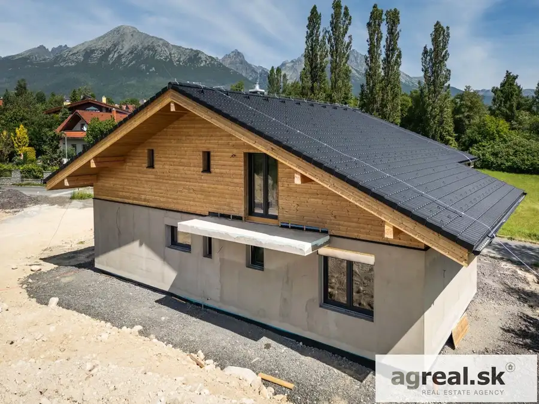
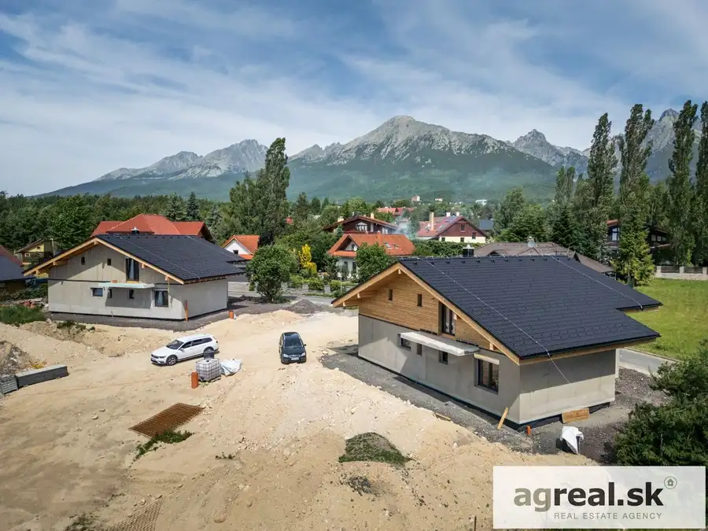
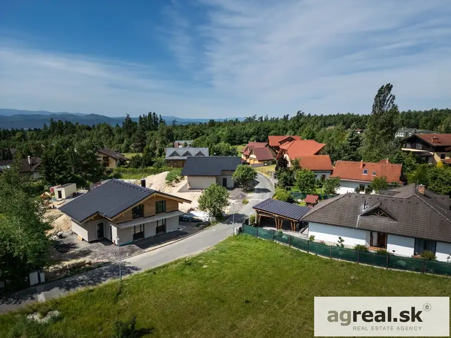
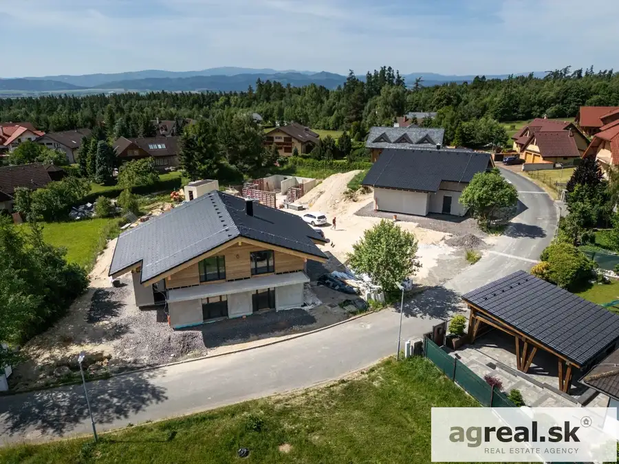
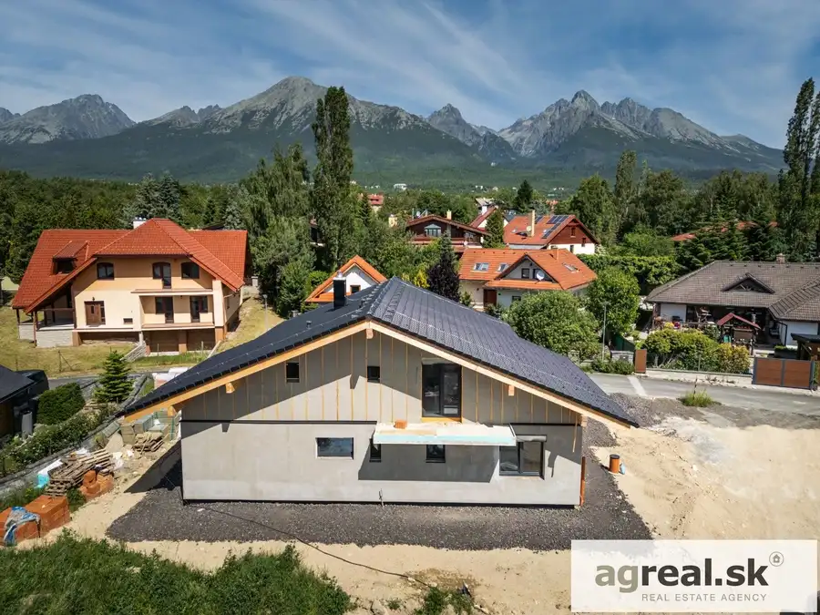

Novostavba 5-izbovej vily pod Tatrami - Nová Lesná, vysoký štandard
Nová Lesná





- Plocha197 m²
- StavNovostavba
- VlastníctvoOsobné
O nehnuteľnosti
Pod Vysokými Tatrami a Starým Smokovcom, ponúkame na predaj vilu v novovybudovanej štvrti v Novej Lesnej, ktorá je vhodná na trvalé bývanie, alebo ako rekreačný dom pod slovenskými veľhorami. Dom je tesne pred dokončením a kolaudáciou, vyhotovený je s vysokým citom pre detail v nadštandardnom prevedení. Stavebne ide o 2-podlažnú vilu so sedlovou strechou, postavenou z tehly (HELUZ). Na prízemí sú umiestnené – vstupná hala, WC, obývacia hala, izba spríslušenstvom (šatník, kúpeľňa), komora, technická miestnosť a komunikačné plochy. Na 2.NP objektu sú umiestnené tri izby a dve kúpeľne, z toho master bedroom má vlastnú kúpeľňu. Objekt je vybavený podlahovým vykurovaním, zdrojom je tepelné čerpadlo NIBE 18 kW s centrálnou prípravou TÚV. V dome je taktiež teplovzdušný krb o celkovom výkone 12 kW. Architektonicky je objekt v súlade s jestvujúcou zástavbou v širšom okolí, s prihliadnutím na použitie klasických stavebných materiálov. Okná sú drevené, s izolačným 3-sklom. Dom bude dohotovený v štandarde (zašleme na požiadnie) a skolaudovaný v 1Q 2027. Výmera domu činí 197 m², pozemok má 604 m² plus podiel na priľahlej prístupovej ceste. Na pozemku sú planované 2 parkovacie miesta.Poloha domu aj jeho vyhotovenie ho predurčuje pre náročných klientov, ideálny je pre rodinu s deťmi, alebo ako rekreačný dom pre záujemcov z ktoréhokoľvek kúta Slovenska, či Európy. Poskytuje letné aj zimné rekreačné vyžitie v najprestížnejšej časti Vysokých Tatier, na vysokohorskom vzduchu, v krásnej scenérii a pritom s výborným napojením na infraštruktúru rozvinutej turistickej oblasti. Aktuálne platí možnosť zakúpiť 2 domy vedľa seba. Cena:1.100.000,-EUR Video: https://youtu.be/_m5n4P9JxtYKontakt: 0907/ 201 692, ilja.miskovic@agreal.skPôdorysy a viac foto zašleme na požiadanie. Cena zahŕňa:- preverenie právneho stavu a tiarch danej nehnuteľnosti z dostupných informácií z katastra nehnuteľností- kompletný právny servis spojený s vyhotovením rezervačných a kúpnych zmlúv zabezpečený advokátmi s dlhoročnou praxou v oblasti realitného a katastrálneho práva- realitné poradenstvo a asistencia- províziu za sprostredkovanie- služby spojené s odovzdaním nehnuteľnosti a prepisom energií u jednotlivýchdodávateľovV prípade financovania nehnuteľnosti prostredníctvom hypotekárneho úveru:- zabezpečenie dostupného znalca - bezplatné sprostredkovanie hypotekárneho úveru prostredníctvom našichzmluvných partnerov
Parametre
- Bezpečnosť
- Bezpečnostné dvere
- Doprava
- MHD
- Druh
- Rodinný dom
- Druh domu
- Rodinná vila
- Dátum zverejnenia
- 02. 07. 2025
- Energetický certifikát budovy
- V príprave
- Orientácia
- Juhovýchodná
- Plocha pozemku
- 604 m²
- Podpivničenie
- Nedostupné
- Počet izieb / miestností
- 5
- Počet kúpeľní
- 3
- Počet nadzemných podlaží
- 2
- Počet spální
- 4
- Počet vonkajších parkovacích miest
- 2
- Rok kolaudácie
- 2027
- Rok výstavby
- 2027
- Stav nehnuteľnosti
- Novostavba
- Telekomunikácie
- Satelit, Internet
- Terás
- 2
- Terén pozemku
- Rovinatý
- Typ
- Predaj
- Typ konštrukcie
- Tehlová
- Vlastníctvo
- Osobné
- Voľnočasové aktivity
- Rybolov, Turistika, Cykloturistika
- Vybavenie
- Terasa, Krb, Vonkajšie parkovacie miesto
- Vykurovanie
- Ústredné
- Zariadenie
- Nezariadené
- Zastavaná plocha
- 142 m²
- Úžitková plocha
- 197 m²
Kde to je


Mohlo by Vás zaujímať
 BytNové
340 000 €2-izbový byt v novostavbe Rezidencia Búdkova s možnosťou garáže
Staré Mesto, Bratislava
2-izbový53.72 m²1. podlažie
BytNové
340 000 €2-izbový byt v novostavbe Rezidencia Búdkova s možnosťou garáže
Staré Mesto, Bratislava
2-izbový53.72 m²1. podlažie
 BytNové
295 000 €Byt 116,60 m² (2-3-izb.) v bytovom dome Tupého s klimatizáciou, možnosť dvojgaráže
Nové Mesto, Bratislava
3-izbový116.6 m²1. podlažie
BytNové
295 000 €Byt 116,60 m² (2-3-izb.) v bytovom dome Tupého s klimatizáciou, možnosť dvojgaráže
Nové Mesto, Bratislava
3-izbový116.6 m²1. podlažie
 BytNové
259 000 €2-izbový podkrovný byt na 2.posch., Ferienčíkova ulica, Staré Mesto.
Staré Mesto, Bratislava
2-izbový56.1 m²2. podlažie
BytNové
259 000 €2-izbový podkrovný byt na 2.posch., Ferienčíkova ulica, Staré Mesto.
Staré Mesto, Bratislava
2-izbový56.1 m²2. podlažie